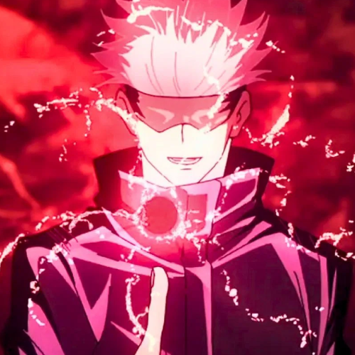

Abilities
The Six Eyes
Hollow Purple

Red
Blue
Dying to win and risking death to win are completely different - Gojo Satoru
He is one of the main protagonists of the Jujutsu Kaisen series. He is a special grade jujutsu sorcerer and widely recognized as the strongest in the world. Satoru is the pride of the Gojo Clan, the first person to inherit both the Limitless and the Six Eyes in four hundred years. He works as a teacher at the Tokyo Jujutsu High and uses his influence to protect and train strong young allies.
The Six Eyes
Hollow Purple
Red
Blue
Dying to win and risking death to win are completely different - Gojo Satoru